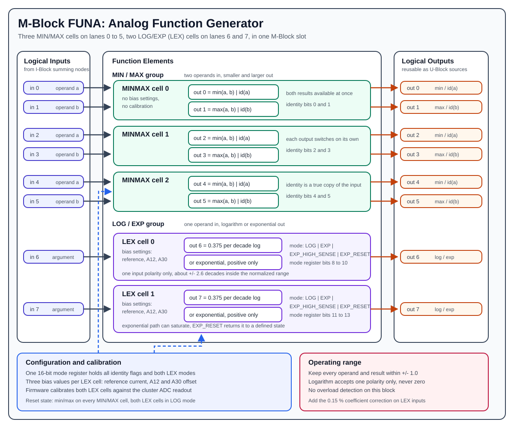

M-Block FUNA¶
The M-Block FUNA is the analog function generator M-Block variant. It occupies one M-Block slot in a cluster and provides nonlinear functions that cannot be expressed with integration, coefficient weighting, or multiplication alone. FUNA stands for function generator, analog: the functions are produced by continuous analog circuitry on the module, not by a table lookup or by a microcontroller. The digital counterpart is the M-FUND block.
One FUNA module presents the normal M-Block interface of eight logical inputs and eight logical outputs. Internally it provides two different kinds of function element:
- three MIN/MAX cells, each with two inputs and two outputs, delivering
min(a, b)andmax(a, b), or passing the operands through unchanged - two LEX cells (logarithm/exponential), each with one input and one output, delivering
logorexp

Hardware Role¶
The FUNA block is an M-Block, so it is part of the cluster-local analog computation loop:
- The I-Block forms the logical M-Block input values by summing weighted lane currents.
- The FUNA block consumes those logical input values.
- The FUNA block produces analog output voltages on the M-Block output path.
- The U-Block can then select those outputs again as sources for later routes.
The FUNA block receives already prepared analog operands and applies the selected nonlinear function. Coefficient weighting, summation, source selection, and lane routing remain the job of the surrounding C-Block, I-Block, U-Block, and T-Block resources.
Unlike the INT block, FUNA does not participate in the run-mode state machine. It uses neither the mode lines nor the external halt line of the DIMM interface, and it does not drive the cluster overload line. Its outputs follow their inputs continuously, in every machine mode.
Element Organization¶
One FUNA module contains five function elements distributed over the eight logical lanes:
| Element | Type | Inputs | Outputs |
|---|---|---|---|
MINMAX 0 |
MIN/MAX cell | input 0, input 1 |
output 0, output 1 |
MINMAX 1 |
MIN/MAX cell | input 2, input 3 |
output 2, output 3 |
MINMAX 2 |
MIN/MAX cell | input 4, input 5 |
output 4, output 5 |
LEX 0 |
log/exp cell | input 6 |
output 6 |
LEX 1 |
log/exp cell | input 7 |
output 7 |
For MIN/MAX cell i:
a input = 2*i
b input = 2*i + 1
a output = 2*i -> min(a, b) or id(a)
b output = 2*i + 1 -> max(a, b) or id(b)
For LEX cell j:
The lane assignment is fixed on the module. As always, these are slot-local indices. One cluster has 16 logical M-Block lanes, so the cluster-level index is:
cluster lane = slot_offset + local index
slot_offset = 0 for the first M-Block slot
slot_offset = 8 for the second M-Block slot
A FUNA block in the second slot therefore answers on cluster inputs 8..15, with its two LEX cells on lanes 14 and 15.
Identity Lanes¶
Unlike the MDR or MUL blocks, FUNA has no separate identity outputs on extra lanes. Instead, each of the six MIN/MAX lanes can be switched individually so that its output carries an unmodified copy of its own input:
output 0 -> id(input 0) output 3 -> id(input 3)
output 1 -> id(input 1) output 4 -> id(input 4)
output 2 -> id(input 2) output 5 -> id(input 5)
The two LEX lanes have no identity option: outputs 6 and 7 always carry the log or exp result.
The identity path is the prepared operand as it enters the selection circuitry, so it is a genuine copy and not a second, separately calibrated path. That makes it useful for the same purposes as the MDR ID path:
- A known analog signal can be routed in and observed on the output side.
- Routing and output-path behavior can be separated from the nonlinear behavior.
- A calibration routine can compare the identity path against the
min/maxpath.
Switching an output to identity does not affect the other output of the same cell. A cell can therefore deliver min and max at the same time, or min on one lane and an untouched copy of the second operand on the other.
The firmware exposes this as a six-bit set, plus a helper that puts all six lanes into identity mode at once, which is what the cluster-wide routing calibration uses.
MIN/MAX Cells¶
A MIN/MAX cell takes two prepared operands and makes both the smaller and the larger of them available, each on its own output lane:
| Output lane | Default | Identity mode |
|---|---|---|
2*i (A side) |
min(a, b) |
id(a) |
2*i + 1 (B side) |
max(a, b) |
id(b) |
Both results are produced continuously; selecting one output as identity does not disturb the other. Getting min and max of the same operand pair therefore costs one cell and no extra routing.
After a block reset the identity bits are cleared, so every MIN/MAX cell powers up in min/max operation.
MIN/MAX cells need no bias settings and have no calibration parameters of their own. Their accuracy comes from the precision input conversion and the matched selection circuitry on the module.
Typical Uses¶
- Limiting, by taking the
minagainst a constant to cap a signal from above, or themaxagainst a constant to floor it from below - Saturation and dead-band models, by combining a limit with a subtraction in the I-Block
- Absolute value and comparison logic, by feeding a signal and its negation into one cell
- Envelope forming, by taking the running
maxof two prepared signals
LEX Cells¶
A LEX cell computes either a logarithm or an exponential on a single lane. Both functions come from the same circuitry; a mode setting selects which one is active. Each of the two LEX cells is configured independently.
Logarithm Mode¶
Logarithm mode is the default after reset. The cell produces a base-10 logarithm of the input value, referred to a programmable reference current:
Both in and out are normalized machine values, where 1.0 is full scale. The two constants in this expression are what a model has to work with:
0.375per decade. One decade of input change produces0.375of output change. This scale factor is deliberately left as it is rather than being rescaled on the module, because there is always a C-Block coefficient behind the function that can absorb the scaling at no extra cost.ref, the reference point. The output crosses zero where the input equals the reference. The reference is set through the bias settings described below, so it is the knob that positions the usable window over the expected input range.
Staying inside the normalized ±1.0 range of the rest of the cluster limits a single route to roughly ±2.6 decades around the reference point. The cell itself can cover more, but values beyond ±1.0 leave the range the surrounding blocks are calibrated for.
The logarithm is only defined for a positive argument, and the input accepts one polarity only:
- A zero argument drives the output towards its negative limit.
- An argument of the wrong polarity is not a valid operating point, and the output will rail.
As with the MDR square-root mode, the route sign is part of the hardware interface and has to be chosen deliberately when the model is programmed. The firmware test sweep exercises the cell over the positive input range 0.01 to 1.0, which is the two decades that comfortably fit inside the normalized output range.
Example, with the reference placed at full scale:
Exponential Mode¶
Exponential mode inverts the transfer function of the same cell, so the output becomes an exponential of the input. Three properties follow from how that inversion works and are worth keeping in mind while programming a model:
- The output is positive only. There is no negative branch.
- The usable span is about four decades, roughly 100 µV to 1 V at the module output. Signals below about 100 µV cannot be carried reliably through the U/C/I matrix, so the theoretical span is larger than the usable one.
- The output scales with the reference. Changing the reference current moves the whole exponential curve, exactly as it moves the zero crossing of the logarithm.
In the default sensitivity setting the cell is dimensioned so that one normalized input unit corresponds to one decade of output, to within about 0.1 %. That makes the default the natural choice for models expressed in decades:
in = 0.0 -> out = 1.0 * full-scale reference level
in = 1.0 -> out = 0.1 * full-scale reference level
in = 2.0 -> out = 0.01 * full-scale reference level
Sensitivity And Reset¶
Each LEX cell is configured with one of four modes:
| Mode | Meaning |
|---|---|
LOG |
logarithm, the reset default |
EXP |
exponential at default sensitivity, about one decade per normalized input unit |
EXP_HIGH_SENSE |
exponential at high sensitivity, roughly 1.6 decades per normalized input unit |
EXP_RESET |
exponential path forced into its defined parked state |
EXP_HIGH_SENSE compresses more decades into the same input span. The exact decade scaling of each setting is a calibration result; treat the figures above as design intent rather than as calibrated constants.
EXP_RESET exists because the exponential configuration closes a feedback loop around the nonlinear element. If that loop is driven outside its valid range it can saturate, and the output then stays wrong even after the input returns to a valid value. Selecting EXP_RESET and then returning to EXP or EXP_HIGH_SENSE re-establishes the loop from a defined starting point. This is the same class of problem as the latch-up recovery of the MDR block, and the same discipline applies: it is far better to keep the inputs in range than to rely on the recovery.
Exponential latch-up
The exponential configuration can saturate if it is driven out of its valid range, and results stay wrong after the input comes back. Keep every operand and result inside ±1.0, and use the reset mode to recover a cell that has saturated. Logarithm mode cannot latch in this way.
Logarithm mode needs no reset handling. It is the safe default and the state the block powers up in.
Input And Output Polarity¶
As with the other M-Blocks, the FUNA documentation has to distinguish between the mathematical operand and the physical signal polarity at a measurement point. Values reach an M-Block input through the U-Block, C-Block, and I-Block, and that path carries the sign convention of the cluster input/output interface.
Inside FUNA, the MIN/MAX input conversion is inverting, as it is on every M-Block. Which mathematical extremum ends up on the A output and which on the B output therefore depends on the cluster-level sign convention, and should be confirmed once during bring-up rather than assumed.
The LEX cells are more restrictive still: the logarithm accepts only one input polarity at all, and the exponential produces only one output polarity. When documenting a model, use the values actually present at the element inputs for the equations, and state separately which coefficient and input index produce them.
Bias Settings And Calibration¶
Each LEX cell carries three bias settings. They are stored per cell and written to the module together with the mode settings:
| Bias setting | Range | Purpose |
|---|---|---|
| reference current | 0 to 200 µA |
sets the reference point of the logarithm and the output level of the exponential |
| A12 bias | -400 to +400 mV |
input-side offset, which mainly shows up as a gain error of the logarithm |
| A30 bias | -70 to +735 mV |
output-side offset of the function result |
The reference current is generated from a coarse and a fine contribution, each with 12-bit resolution. The coarse contribution covers most of the range, the fine one covers roughly a fifth of it. The firmware splits a requested current between the two automatically, so a caller simply asks for a value in microamperes and gets a much finer effective resolution than a single 12-bit setting would give.
Two properties of the module make LEX calibration iterative rather than a single pass:
- Coupled input offset. The signal input and the reference input share one input-side offset setting. Trimming the offset for the signal path also moves the reference current, so the reference has to be re-trimmed afterwards. Two or three iterations are typically needed.
- Parasitic input resistance. The LEX input has a small parasitic resistance in series with the I-Block input resistor. Across the standard input resistor this is a linear error of about 0.15 %, compensated by increasing the coefficient by the same amount. With the I-Block upscaling range the same parasitic resistance becomes a 1.5 % error.
Mixing upscaled and non-upscaled signals
The parasitic input resistance of the LEX input produces a ten times larger error when the I-Block upscaling range is used. Adding an upscaled and a non-upscaled contribution into the same I-Block summing node gives two different correction factors on one signal, which cannot be compensated with a single coefficient. Avoid that combination.
Calibration Procedure¶
The firmware calibrates the two LEX cells automatically as part of the block calibration. The procedure runs entirely from the cluster: it routes a constant into the LEX inputs, reads the LEX outputs back through the ADC path, and closes the loop in software.
- Prepare. Reset the cluster, route a positive constant of
1.0into LEX input6and LEX input7, and assign the two LEX outputs to ADC channels. Calibrate the routes so the measurement is not biased by the path itself. - Find the reference current. With the input at
1.0, the logarithm must produce exactly0.000, because the input equals the reference. Starting from a rough estimate taken from the first measurement, the reference current is adjusted in a bounded control loop until the measured output is within0.001of zero. - Trim the input offset. Reduce the input to a small value,
0.01in the firmware routine, where the expected output is0.375 * log10(0.01). The deviation between the measured and the expected output is a gain error caused by the input-side offset, and the A12 bias is adjusted in a second bounded control loop to remove it. - Iterate. Because step 3 also moves the reference current, the two steps have to be repeated until both settle.
Both loops are bounded: if a bias setting runs into its minimum or maximum, calibration stops for that cell and reports which limit was reached. That is the signal that the module or the surrounding routing needs attention, not that the loop should be widened.
Keep the input currents at or below the full-scale value during calibration so that the parasitic input resistance contributes as little error as possible.
A block reset clears the mode settings back to LOG and min/max. A calibration reset additionally discards the stored bias values for both LEX cells, so a full calibration run is required before the block is used again.
Firmware Model¶
FUNA is supported by the REDAC firmware. A module is detected through its stored identity, which reports the M-Block entity class and the block type FUNA8. The firmware then instantiates the FUNA block object and its hardware abstraction for the installed hardware revision.
The firmware exposes the block through these settings:
| Setting | Description |
|---|---|
| identity lanes | six independent flags, one per MIN/MAX lane, selecting identity instead of min/max |
| LEX 0 mode | LOG, EXP, EXP_HIGH_SENSE, or EXP_RESET |
| LEX 1 mode | LOG, EXP, EXP_HIGH_SENSE, or EXP_RESET |
| LEX bias values | reference current, A12 bias, and A30 bias per cell |
All mode settings are gathered into a single 16-bit mode register that is transferred to the module in one write and takes effect when it is latched:
| Register bits | Content |
|---|---|
0 to 5 |
identity flag for MIN/MAX lanes 0 to 5 |
6, 7 |
unused |
8 to 10 |
LEX 0 mode |
11 to 13 |
LEX 1 mode |
14, 15 |
unused |
The three bias values per cell are written separately. The firmware offers them in physical units, microamperes for the reference current and millivolts for the two offsets, and rejects values outside the ranges listed above.
Two firmware properties are worth noting for anyone planning work with this block:
- No overload flags. FUNA has no overload detection, and the firmware reports no overload for this block type. Keeping the block inside its valid range is entirely the responsibility of the model.
- Protocol configuration is not complete. The firmware object model, the mode register, and the calibration routine are in place, but the handler that applies a configuration received over the protocol is still a placeholder. FUNA is therefore usable from firmware-level test code today, not yet from a client configuration.
Operating Range And Limits¶
- Keep every operand and every result within
±1.0. - Never route a zero or wrong-polarity argument into a LEX cell in logarithm mode.
- Do not expect exponential outputs below about 100 µV to survive the U/C/I matrix.
- Apply the parasitic-resistance correction on the coefficient, and do not mix upscaled and non-upscaled contributions on a LEX input.
- Remember that the logarithm covers roughly
±2.6decades before it leaves the normalized range, and place the reference so that the interesting part of the input range falls inside that window. - There is no overload reporting, so an invalid operating point shows up as a wrong result, not as an error.
Example Signal Flow¶
Limiting A Signal With A MIN/MAX Cell¶
Suppose MIN/MAX cell 0 should limit a signal from above:
A typical cluster-level setup is:
- Enable a constant source or route an existing M-Block output through the U-Block.
- Use a C-Block coefficient to create the operand
xand connect it through the I-Block to FUNA input0. - Use a second C-Block coefficient set to
0.8and connect it through the I-Block to FUNA input1. - Leave the identity flags of lanes
0and1cleared, so cell0runs inmin/maxoperation. - Read output
0as the limited signal.
Output 1 of the same cell simultaneously carries max(x, 0.8), which costs nothing extra and is available to the U-Block as an independent source. If the model does not need it, that lane can be switched to identity instead and will then carry an untouched copy of the constant.
A Decade-Mapped Logarithm¶
To compute a logarithm on input 6:
- Route the strictly positive operand
xto FUNA input6. - Choose the reference current so that the reference point
xRefsits in the middle of the expected input range. - Leave LEX 0 in its default
LOGmode. - Use the C-Block coefficient behind output
6to apply whatever scaling the model needs, including the parasitic-resistance correction.
With the reference at full scale, an input of 0.1 gives -0.375 and an input of 0.01 gives -0.750.
Multiplication Through Log And Exp¶
The two LEX cells and the surrounding cluster resources can form a product without using a multiplier block, which is the classical reason for having log and exp elements in an analog computer:
- Route
ainto LEX 0 andbinto LEX 1, both inLOGmode, both strictly positive. - Sum the two logarithmic outputs in an I-Block summing node, applying the coefficient scaling that matches the decade constants.
- Route the sum into a third element configured for
EXPto recover the product.
Because a FUNA module has only two LEX cells, the exponential step needs a LEX cell on a second FUNA block, or the intermediate sum has to be carried to another cluster. Plan the resource usage before committing to this construction; for a plain product, an MDR or MUL block is the cheaper choice.
Pybrid Programming¶
The pybrid programming interface for M-FUNA is under development. Firmware support exists, but there is no FUNA block class in the current public pybrid entity model, and the mode register described above is not yet serialized by the REDAC run path. This section will be updated when the public configuration model is available.